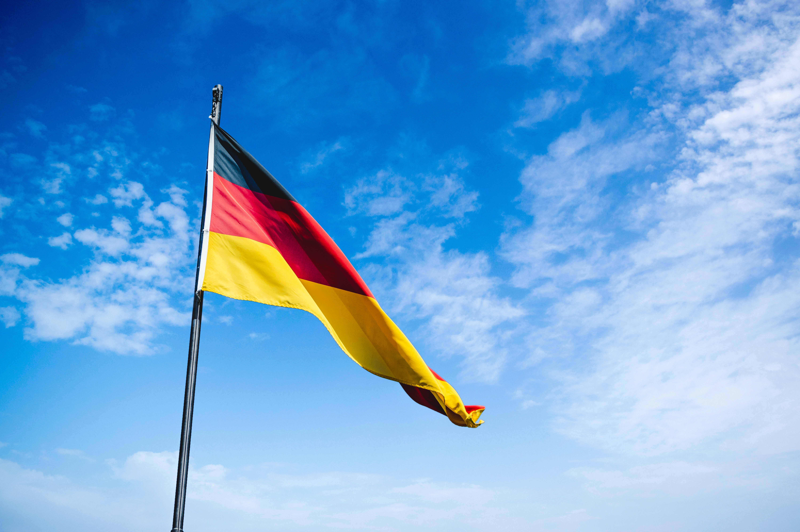

☺ HALLO! HELLO! 안녕하세요!

⇨ Familienseite : GCFL Gwacheon Foreign Language Highschool / Goethe Institute Korea
Willkommen bei der deutsche Abteilung der Gwacheon Foreign Language High School.
GCFL ist eine der renommiertesten Schulen in Korea.
Welcome to the department of German in Gwacheon Foreign Language Highschool.
GCFL is one of the most prestigious schools in Korea
Warum wir Deutsch lernen:
Deutschland ist eines der mächtigsten Länder Europas und ein Sozialstaat mit fortschrittlicher Wissenschaft und Technologie.
Es ist auch die Heimat von Geisteswissenschaften wie Philosophie, Psychologie und Theologie.
Deutsch ist die meistgesprochene Sprache in der Europäischen Union.
Die Studierenden des Fachbereichs Deutsch der GCFL beginnen mit den Grundlagen und entwickeln ihre deutsche Sprache schnell durch Grammatik, Literatur, Präsentationen, Diskussionen, Sprachprüfungen und verschiedene Schulveranstaltungen.
Die meisten Absolventen gehen an renommierte Universitäten in Korea und einige an Universitäten im Ausland.
Es gibt 3 Klassen und etwa 75 Studenten, die Deutsch an der GCFL studieren.
Herr In-gak Song, ein Koreanischlehrer, und Herr Jan Ristok, ein Muttersprachler, unterrichten mit Leidenschaft.
Hier erhalten Sie Schulinformationen wie Schulleben, Unterricht und besondere Aktivitäten.
Sie können auch einfaches Deutsch lernen, die deutsche Kultur und die koreanische Kultur auf Deutsch kennenlernen.
Why we learn German:
Germany is one of the most powerful countries in Europe and a welfare state with advanced science and technology.
It is also home to humanities such as philosophy, psychology, and theology.
German is the most spoken language in the European Union.
The students in the department of German at GCFL begin with the basics and rapidly develop their German language through grammar, literature, presentations, discussions,language certification exams, and various school events.
Most of the graduates go to prestigious universities in Korea, and some go to universities abroad.
There are 3 classes and about 75 students studying German at GCFL.
Mr.In-gak Song, a Korean teacher, and Mr.Jan Ristok, a native speaker, teach passionately.
You can get school information such as school life, classes, and special activities here.
Also, you can learn simple German, experience German culture and Korean culture introduced in German.